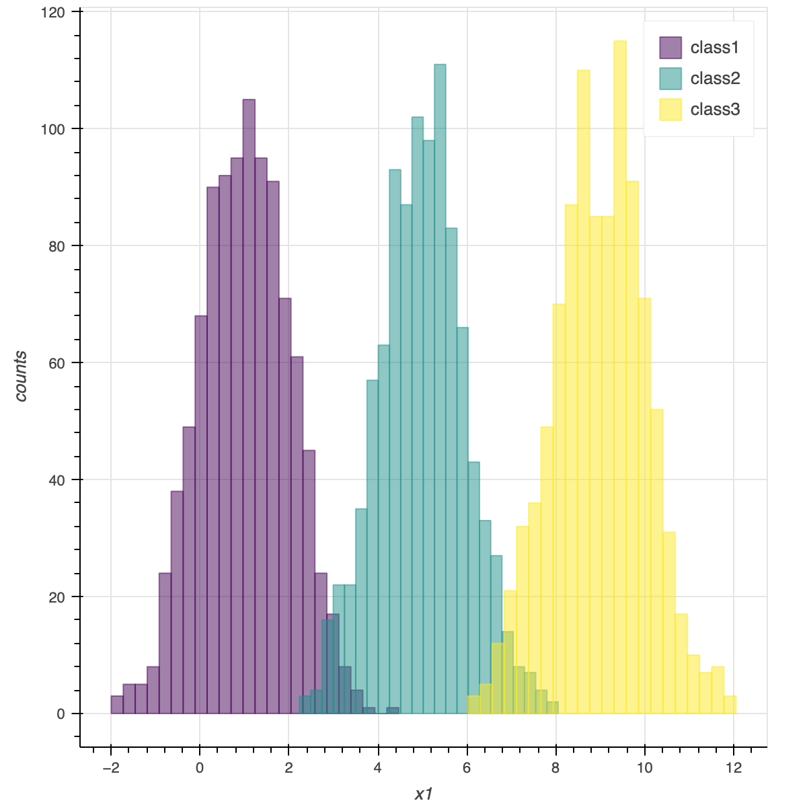
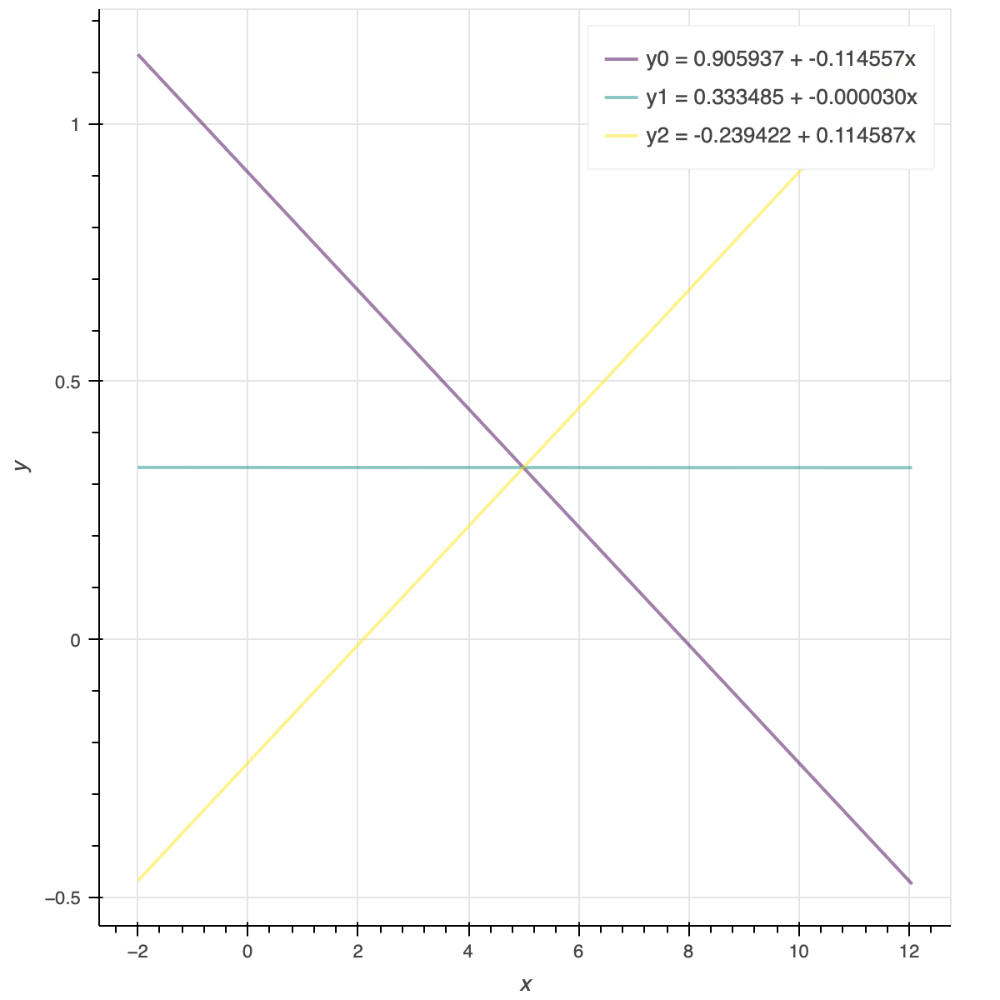
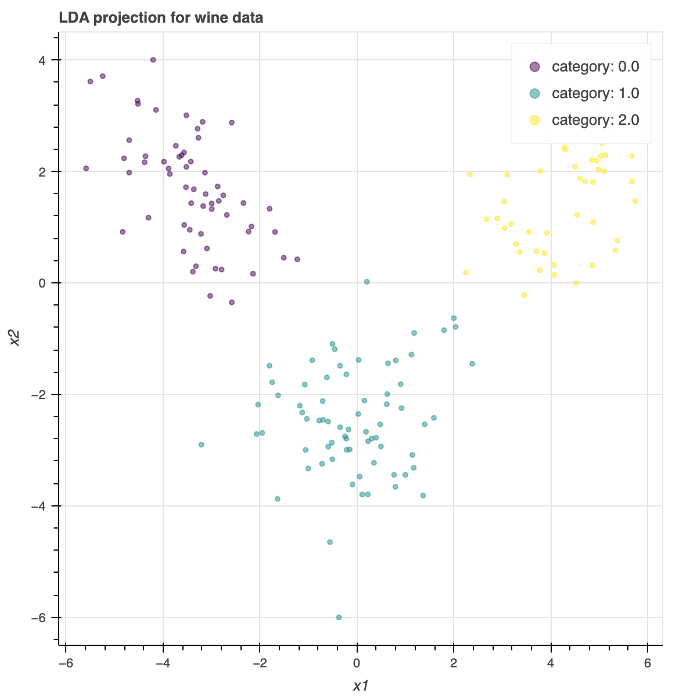
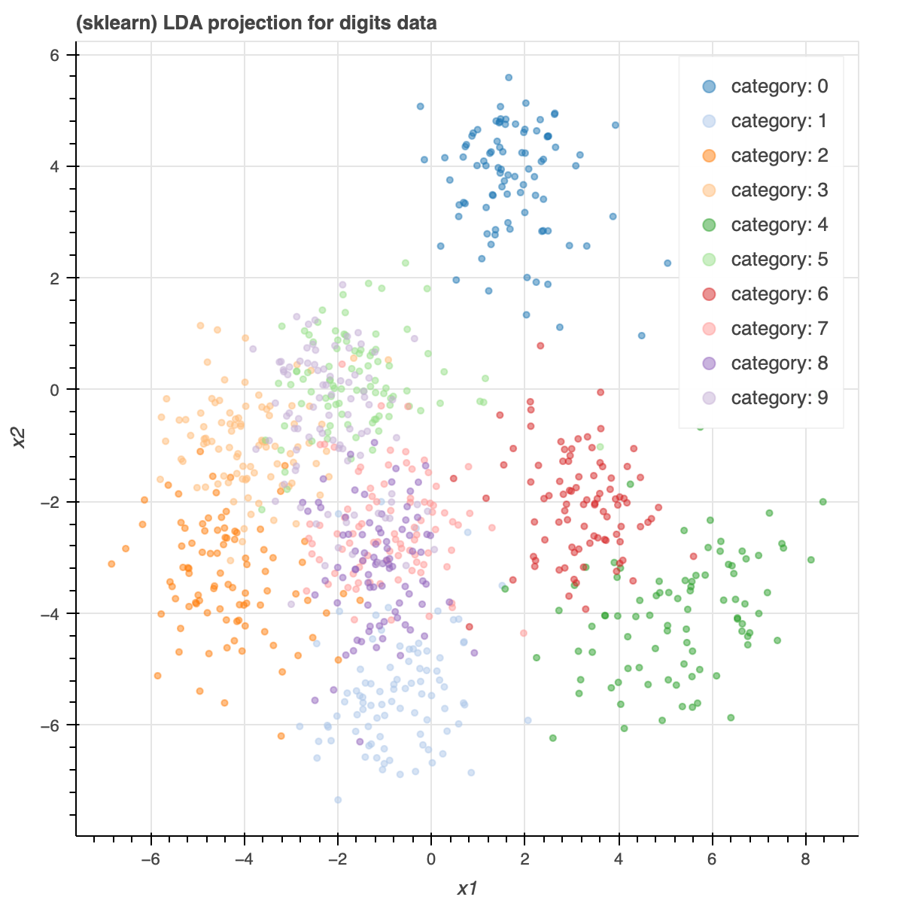
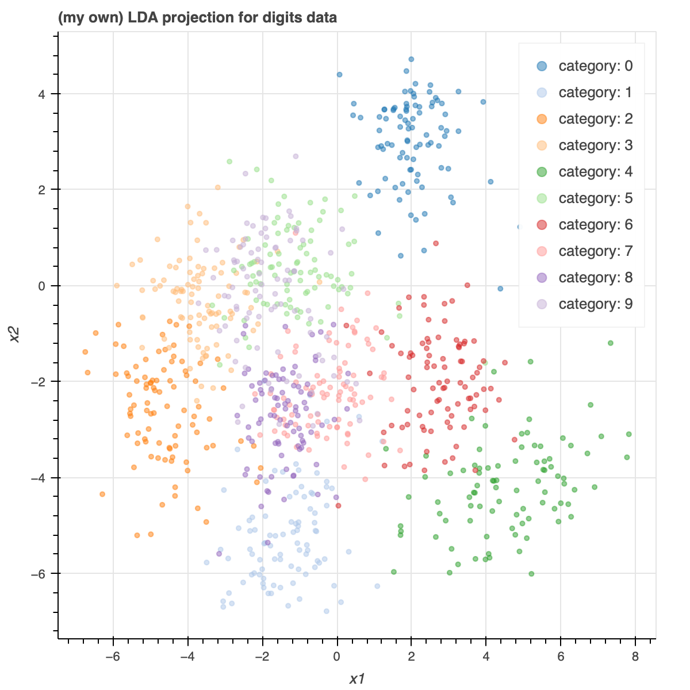
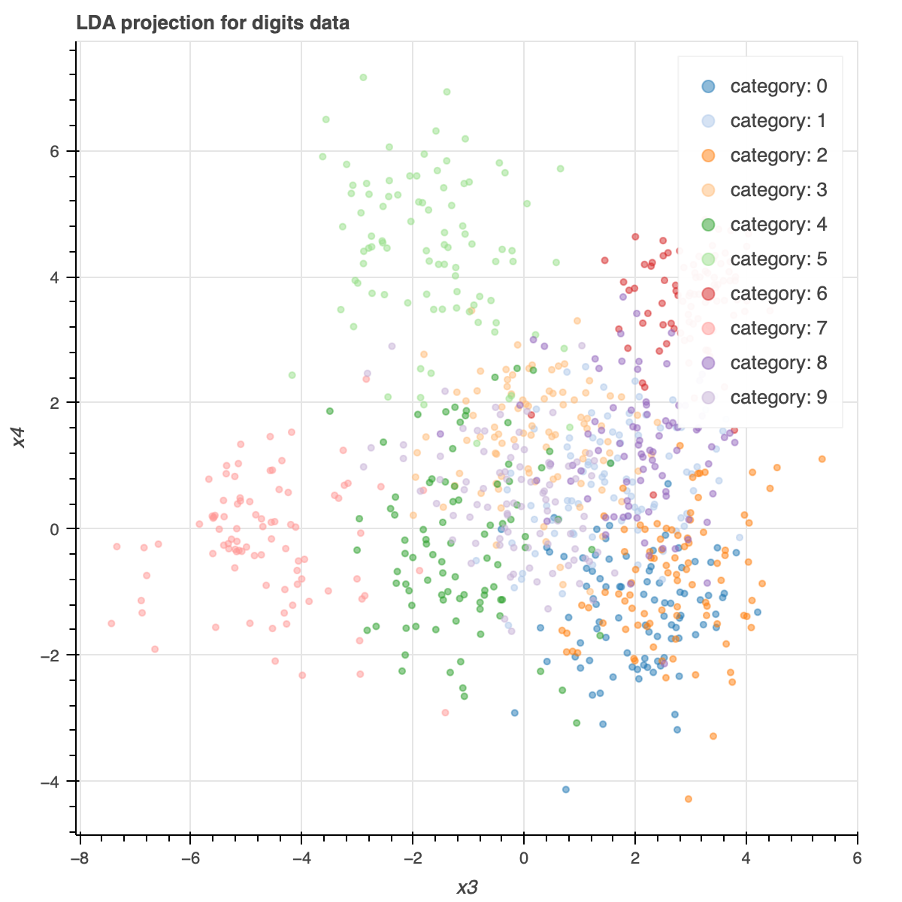

ESL 4: Linear Methods for Classification
4.2 Linear Regression of an Indicator Matrix
对于分类问题，我们可以把每个分类用 indicator variable 来编码。
例如，如果有 \(K\) 个类型，我们可以定义：
当样本是第 \(i\) 类时，\(y_i = 1\)，其它值为 0。
当我们有 N 个样本时，可以写成一个 \(N \times K\) 矩阵（indicator response matrix）：
这个矩阵每一行仅有一个 1，其余值为 0。这个 1 代表该行样本的类型。
这实际上就是 one-hot 编码，这种编码相对于直接使用整数 \(1, ..., K\) 来表示的有优势在于 类型间的距离都是一样的。
利用第三章的 Linear Regression，我们可以得出系数矩阵 \(\hat{\textbf{B}}\)：
\(\hat{\textbf{B}}\) 是一个 \((p+1) \times K\) 的矩阵。\(\textbf{X}\) 是 \(N \times (p+1)\) 矩阵。
得到估计值：
该方法的步骤是：
- 对类型进行 one-hot 编码得到 \(\textbf{Y}\)
- 将问题视作一个多变量的线性回归问题，对 one-hot 编码后的每个 bit 进行拟合得到 \(\hat{\textbf{B}}\)
- 在判断类别时，选择 \(\textbf{X}\hat{\textbf{B}}\) 每行的最大值所表示的类型
使用 Linear Regression 解决分类问题的最大问题在于，当类别数 \(K \leq 3\) 时，可能会出现某个类被掩盖（mask）的情况。其本质原因是 Linear Regression 的“刚性”特质，即它的分界面是不够灵活的。
举个简单的例子，对于以下三个 1 维正态分布：
- class1: \(x \sim N(1, 1)\)
- class2: \(x \sim N(5, 1)\)
- class3: \(x \sim N(9, 1)\)
分布如下：

如果我们用 Linear Regression 拟合，那我们可以得到 3 组 \(\beta_0, \beta_1\)，分别对应第 \(i\) 组，可以用来计算 \(y_i\) 的值：

可以看到，\(y_1\) （对应class2）从来不是最大值。也就是说我们的分类结果中只有 class1 和 class3 了，class2 被 mask 了。可以通过结果验证：
代码：import numpy as np
import pandas as pd
def generate_nd_sample(name, mu_array, sigma, N):
xx = {}
for i in range(1, len(mu_array) + 1):
xi = np.random.normal(mu_array[i-1], sigma, N)
xx[f"x{i}"] = xi
xx["name"] = name
return pd.DataFrame(xx).astype({"name":"category"})
s1 = generate_nd_sample("class1", [1], 1, 1000)
s2 = generate_nd_sample("class2", [5], 1, 1000)
s3 = generate_nd_sample("class3", [9], 1, 1000)
s = pd.concat([s1, s2, s3]).reset_index(drop=True)
# Linear Regression
tmp = s.copy()
tmp.insert(0, "ones", np.ones(s.shape[0]))
X = np.matrix(tmp.drop("name", axis=1).to_numpy().T).T
Y = np.matrix(pd.get_dummies(s.name))
def LR_beta(X, Y):
# class count
K = Y.shape[1]
return (X.T * X).I * X.T * Y
B = LR_beta(X, Y)
# Plot
from bokeh.io import output_notebook
output_notebook()
from bokeh.palettes import viridis
from bokeh.plotting import figure, show
import itertools
def create_histogram_figure(sample_data):
# sample data must be like:
# | x | category |
assert sample_data.shape[1] == 2, "input must be of shape (N, 2)"
x = sample_data.iloc[:, 0]
categories = sample_data.iloc[:, 1].unique()
fig = figure(x_axis_label=x.name, y_axis_label="counts")
color_gen = itertools.cycle(viridis(len(categories)))
for (category, color) in zip(categories, color_gen):
data = sample_data[sample_data.iloc[:, 1] == category]
counts, bins = np.histogram(data.iloc[:, 0], bins='auto')
fig.quad(top=counts, bottom=0, left=bins[:-1], right=bins[1:],
alpha=0.5, color=color, legend_label=str(category))
return fig
def create_line_figure(lines, x_start, x_end):
fig = figure(x_axis_label="x", y_axis_label="y")
color_gen = itertools.cycle(viridis(lines.shape[0]))
for i in range(lines.shape[0]):
b0, b1 = lines[i,0], lines[i, 1]
fig.line(x=[x_start, x_end], y = [b0 + b1*x_start, b0 + b1*x_end],
line_width=2, alpha=0.5, color=next(color_gen),
legend_label=f"y{i} = {b0:.6f} + {b1:.6f}x")
return fig
hist_fig = create_histogram_figure(s)
line_fig = create_line_figure(B.T, s.x1.min(), s.x1.max())
from bokeh import layouts
show(layouts.column(hist_fig, line_fig))
4.3 Linear discriminant analysis
为了获得最优的分类结果，我们需要知道后验概率（\(X = x\) 时属于第 \(k\) 类的概率）：
因为本质上，我们是在找到一个 k 使得后验概率最大，即：
这被称为 判别函数（discriminant function），其中：
- \(f_i(x)\) 是第 i 类样本取 x 的概率
- \(\pi_i\) 是属于第 i 类的先验概率
这里的难点在于确定 \(f_i(x)\)，显然 \(\pi_i\) 的估计是可以通过样本数据直接得到的。
线性判别分析（Linear Discriminant Analysis, LDA）假设变量 X 服从多维高斯分布（X 包含多维）：
带入最优分类的式子, 逐步去掉与 \(k\) 无关的部分：
此时，判别函数为：
是 \(x\) 的二次函数。因此称为二次判别分析(Quadratic Discriminant Analysis, QDA)。
我们再 假设每个类中变量 X 分布的方差是相等的，则 \(\mathbf{\Sigma}\) 也与 \(k\) 无关了，可以进步一化简判别函数为：
我们可以看出，化简后判别函数对于 \(x\) 是 线性 的。这说明两个类的分界面（即判别函数相等时）也是线性的。因此叫做线性判别分析(Linear Discriminant Analysis, LDA)。
实际中，我们可以通过样本估计高斯分布的参数：
- \(\hat{\pi}_k = N_k / N\)，即第 k 类的样本数占总样本数的比例
- \(\hat{\mu}_k = \sum_{g_i = k} x_i / N_k\)，即第 k 类样本 X 的平均值
- \(\hat{\mathbf{\Sigma}} = \sum_{k=1}^K \sum_{g_i = k} (x_i - \hat{\mu}_k)(x_i - \hat{\mu}_k)^T / (N - K)\)，对协方差矩阵的无偏估计，证明在 ESL3 中
有了判别函数的表达式 \(\delta_k(x)\)，我们只需要依次带入 \(k = 1, ..., K\), 当得到的 \(\delta_k(x)\) 最大时的 \(k\) 即为最佳分类。
4.3.2 Computation of LDA
协方差矩阵 \(\mathbf{\Sigma}\) 是一个对称矩阵，可以进行特征值分解：
其中：\(\mathbf{Q}\) 是单位正交矩阵，\(\mathbf{\Lambda}\) 是对角阵。带入判别函数有：
令：
有：
当我们判断某个样本 \(x_1\) 属于 m 和 n 中的哪一个类时，可以比较其判别函数，我们判断它是 m 类如果满足：
带入表达式有：
这样看起来就非常直观了。 LDA 是将样本投影在两个类中心的连线上，并且比较它更靠近哪一边，以此决定它属于哪个类。当然，这个过程还考虑了两个类的先验概率（\(\ln(\pi_m/\pi_n)\) 项）。
4.3.3 Reduced-Rank Linear Discriminant Analysis
LDA 也是一种降维的手段。假设我们有 \(p\) 维特征，\(K\) 个类别。根据 4.3.2 中介绍的计算方式，我们一共有 \(K\) 个类中心点。他们一定在一个最高 \(K-1\) 维的空间里。
例：红酒分类
例如，对于 2 个类的分类问题，无论特征是多少维，我们只有 2 个类中心点。他们必定在一条直线（1维）上。同理，对于 3 个类的分类问题，我们只有 3 个类中心点。他们必定在一个平面（2维）内，如果特征维度大于等于 2。
因此，经过 LDA，原始数据总能被投影到一个超平面上，其维度为（对应 sklearn LDA 方法中的 n_components 参数）：
这说明，在 \(p \gg K\) 时，使用 LDA 可以将一个 \(p\) 维的输入降维到 \(K-1\) 维。
我们以 sklearn 中的 wine 数据集为例。它具有 13 维特征，3 个类别。我们使用 LDA 可以将这些数据投影到一个 2 维的平面上。

代码：
import pandas as pd
import numpy as np
from sklearn import datasets
wine = datasets.load_wine()
X = pd.DataFrame(wine.data, columns = wine.feature_names)
y = wine.target
# LDA projection
from sklearn.discriminant_analysis import LinearDiscriminantAnalysis
model = LinearDiscriminantAnalysis(n_components=2).fit(X, y)
model.transform(X)
# plot
data_to_plot = pd.DataFrame(
np.insert(model.transform(X), 2, y, axis=1),
columns=["x1", "x2", "class"])
show(create_scatter_figure("LDA projection for wine data", data_to_plot))
Find the optimal subspace
在实际中，如果 \(K\) 也很大，那还需要进一步降低维度。假设我们目标是降低到 \(L\) 维（\(L \ll K-1\))，即寻找超平面 \(H_{K-1}\) 的最优子空间 \(H_L\)。
Fisher 将这个问题提炼为：
找到线性组合 \(Z = a^T X\) 使得类间的方差相对于类内方差最大
\(X\) 的类内(Within)方差为：
\(X\) 的类间(Between)方差为：
根据向量的统计特性，有 \(Z\) 的类内方差为 \(a^T \textbf{W} a\)，类间方差为 \(a^T \textbf{B} a\)。
于是，Fisher 实际上是在解决这个优化问题：
由于我们总可以通过调节求得的 \(a\) 的系数使得 \(a^T \textbf{W} a = 1\)，我们可以将其改写为：
假设 \(\mathbf{W}\) 可逆，令 \(u = \mathbf{W}^{\frac{1}{2}} a\)，由于 \(\textbf{W}\) 是对称矩阵，有：
\(\mathbf{W}^{-\frac{1}{2}}\textbf{B}\mathbf{W}^{-\frac{1}{2}}\) 也是对称矩阵，必定存在特征值分解：
因此化简为：
再令 \(v = \mathbf{Q}^T u\)，由于 \(\mathbf{Q}\) 是单位正交矩阵，\(v^T v = 1\) 依然成立：
\(\mathbf{\Lambda}\) 是对角矩阵，所以 该优化问题本质是求最大特征值。假设 \(\lambda_i\) 最大，显然在 \(v_i = 1\) 时取得最大值 \(\lambda_i^2\)。
由于 \(\mathbf{\Lambda}\) 是 \(\mathbf{W}^{-\frac{1}{2}}\textbf{B}\mathbf{W}^{-\frac{1}{2}}\) 的特征值，为了简化求解，我们利用定理：
\(\mathbf{AB}\) 与 \(\mathbf{BA}\) 具有同样的特征值，如果 \(x\) 是 \(\mathbf{AB}\) 的某个特征向量，则对应的 \(\mathbf{BA}\) 的特征向量是 \(y = \mathbf{B}x\)
可以得到 \(\mathbf{\Lambda}\) 也是 \(\mathbf{W}^{-1}\textbf{B}\) 的特征值。
假设 \(\mathbf{W}^{-1}\textbf{B}\) 的最大特征值为 \(\lambda_i\)，对应的特征向量为 \(\xi\)，则所求的线性变换为：
这样就找到了 \(H_L\) 的 1 个维度，同理，我们选取 top L 个维度，即得到了 \(H_L\)。
定理证明
假设 \(\lambda\) 是 \(\mathbf{AB}\) 的任意特征值。
令 \(y = \mathbf{B}x\)，则有：
同时左乘 \(\mathbf{B}\)：
例：手写数字分类
手写数字分类是通过 8x8 的手写数字图片判断是 0-9 中的哪个数字。显然，这是一个具有 \(p = 8 \times 8 = 64\) 维特征，\(K = 10\) 个类别的分类任务。我们可以用 sklearn 库的 LDA 得到下面的结果（降至 2 维 plot）：

import pandas as pd
import numpy as np
import scipy
from sklearn import datasets
digits = datasets.load_digits()
X = pd.DataFrame(digits.data, columns = digits.feature_names)
y = digits.target
trainX = X[:len(X)//2]
trainY = y[:len(y)//2]
from sklearn.discriminant_analysis import LinearDiscriminantAnalysis
model = LinearDiscriminantAnalysis(n_components=2, solver="eigen", shrinkage=0.01).fit(trainX, trainY)
# reduce rank to 2 dimension data
reduceRankX = model.transform(trainX)
显然，直接调包隐藏了太多细节，为了加深理解，我们根据公式推导自己手动实现一个：
def shrink(cov, shrinkage):
dimensions = cov.shape[0]
return (1-shrinkage) * cov + shrinkage * np.trace(cov) / dimensions * np.identity(dimensions)
def my_lda(X, y, n_components, shrinkage):
T = X.cov()
W = X.groupby(y).apply(lambda g: g.cov() * (len(g)-1)
).groupby(level=1).sum() / X.shape[0]
shrunkW = shrink(W, shrinkage)
invShrunkW = np.linalg.inv(shrunkW)
shrunkB = shrink(T, shrinkage) - shrunkW
# eigen values is ascending
eigenvalues, eigenvectors = np.linalg.eigh(invShrunkW.dot(shrunkB))
# eigen vectors with greatest eigen values
xi = eigenvectors[:,::-1][:,:n_components]
# L = np.linalg.cholesky(invShrunkW)
# return L.dot(xi)
# W^{-1/2}, not Cholesky
return scipy.linalg.sqrtm(invShrunkW).dot(xi)
其中，shrink 函数是为了处理当 \(\mathbf{W}\) 是 奇异矩阵 (不可逆)的情形。我们可以使用 shrunk covariance 来使其变为可逆矩阵再处理。这在输入 \(X\) 是稀疏矩阵时很常见，例如手写数字分类。
其中 \(\alpha\) 是 shrinkage，\(p\) 是特征维度。
另外还需要注意区分矩阵平方根 sqrtm 与 Cholesky Decomposition。
矩阵平方根指 \(\mathbf{B} \mathbf{B} = \mathbf{B}^T \mathbf{B} = \mathbf{A}\)，要求 \(\mathbf{B}\) 是对称矩阵。
Cholesky Decomposition 指 \(\mathbf{L}^T \mathbf{L} = \mathbf{A}\)，要求 \(\mathbf{L}\) 是三角矩阵。
使用自己实现的 LDA 得到与 sklearn 实现类似的结果：

可以看出，在降到 2 维后，LDA 还是能够清楚区分出数字 0, 1, 2, 3, 4, 6，但是存在一些数字的类别重叠在一起的情况。此时可以 增加维度 \(L\) 解决。
下面是第3、4 维：

可以看出，它较好的补足了 1、2 维无法正确分类的数字。对于数字 5、7 有了清楚的分类。
4.4 Logistic regression
逻辑回归希望用输入 \(x\) 的线性组合建模属于 k 类的后验概率，并且要求所有概率之和为 1。
以最后一个类（K 类）的后验概率 \(\text{Pr} (G = K | X = x)\) 为比较基准，有：
可以写为：
为什么不直接对概率进行建模，而要对 logit 函数建模呢？这是因为概率的取值范围是 \([0, 1]\) 而等式右边的线性回归模型的取值范围是 \((-\inf, +\inf)\)。而由于 logit 的一个重要特性就是没有上下限，因此我们可以尝试用线性回归模型拟合 logit。
4.4.1 Fitting Logistic Regression Models
对于第 k 类的某个样本 i，我们希望找到一组模型参数 \(\theta\)，使模型认为该样本属于 k 的概率（即 正确分类概率）尽量大。我们将这个概率计作：
则该优化问题是：
对于所有样本，我们目标是令他们 被正确分类的概率和最大：
为了简化这个问题，我们只考虑而 \(K=2\) 即 二分类 问题情况。此时样本要么属于 1 类要么属于 2 类。
为了简单表示：
我们可以假设样本观测值 \(y_i = 1\) 代表属于第 1 类，\(y_i = 0\) 代表 不属于 第 1 类（那么肯定属于第 2 类）。则
则有：
其中 \(\mathbf{\beta} = [ \beta_{10}, \beta_{11}, ... \beta_{1p} ]\)，对应 \(x = [1, x_1, x_2, ... x_p]\)。
求解这个优化问题可以令其对 \(\beta\) 的导数为 0:
为了求解 \(\dfrac{\partial \ell(\beta)}{\partial \beta} = 0\)，我们可以用凸优化中的 Newton-Raphson 法。即选取一个任意初始 \(x_n\)（不是初始解，因为要求的就是解），并取其切线与 x 轴交点 \(x_{n+1}\)：
其中 \((p+1) \times (p+1)\) 维 Hessian 矩阵：
我们将他们写成矩阵形式：
其中 \(\mathbf{X}\) 是 \(N \times (p+1)\) 矩阵，\(\mathbf{y} - \mathbf{p}\) 是 \(N\) 维列向量，\(\mathbf{W}\) 是 \(N \times N\) 对角矩阵，第 i 个元素是 \(p_1(x_i; \beta) (1 - p_1(x_i; \beta))\)。
带入 Newton-Raphson 公式：
这就是 迭代更新 的计算公式。由于 \(\mathbf{p}\) 和 \(\mathbf{W}\) 都随 \(\beta\) 变化，因此我们需要在每轮迭代重新计算他们的值。
上式中，我们定义了：
回想 最小二乘法 的公式：
可以发现两者非常相似，区别在于逻辑回归中多了一个权重对角矩阵 \(\mathbf{W}\)。因此这个算法也称为 iteratively reweighted least squares（重新加权迭代最小二乘法）。
接下来我们还需要一个 \(\beta\) 的 初始值。一般情况下可以选 \(\beta = 0\)。该算法 不保证收敛。
例：乳腺癌诊断
该案例通过 30 维特征来判断乳腺癌是恶性还是良性，是一个典型的 2 分类问题。
import pandas as pd
import numpy as np
from sklearn import datasets, model_selection
def load_sklearn_data(sk_data):
X = pd.DataFrame(sk_data.data, columns = sk_data.feature_names)
y = pd.Series(sk_data.target, name="target").apply(
lambda index: sk_data.target_names[index]).astype("category")
return X, y
X, y = load_sklearn_data(datasets.load_breast_cancer())
X_train, X_test, y_train, y_test = model_selection.train_test_split(
X, y, test_size=0.2)
from sklearn.metrics import accuracy_score
from sklearn.linear_model import LogisticRegression
model = LogisticRegression(solver="newton-cg").fit(X_train, y_train)
accuracy_score(model.predict(X_test), y_test)
结果是 0.9385964912280702。我们再用自己实现的 LR 进行判断：
def sigmoid(x, beta):
tmp = np.exp(x.dot(beta))
return tmp / (1 + tmp)
class MyLogisticRegression:
def __init__(self, max_iter, tolerance = 0.01):
self.max_iter_ = max_iter
self.tolerance_ = tolerance
self.beta = None
def fit(self, train_X, train_y):
N, p = train_X.shape
X = train_X.to_numpy()
X = np.concatenate((np.atleast_2d(np.ones(N)).T,
train_X.to_numpy()), axis=1)
self.beta = np.zeros(p+1)
beta = self.beta
for i in range(self.max_iter_):
prob = np.apply_along_axis(sigmoid, 1, X, beta)
W = np.diag(prob * (1 - prob))
z = X.dot(beta) + np.linalg.inv(W).dot(train_y.cat.codes - prob)
new_beta = np.linalg.inv(X.T @ W @ X) @ X.T @ W.dot(z)
beta = new_beta
self.beta = beta
def predict(self, test_X):
X = test_X.copy()
X.insert(0, "x_0", np.ones(test_X.shape[0]))
prob = X.apply(lambda row: sigmoid(row, self.beta), axis=1)
return prob.apply(lambda x: 1 if x >= 0.5 else 0)
根据公式写代码，注意 \(\beta\) 的迭代更新即可。最大的难度是终止条件，因为迭代数次之后会遇到 Hessian 矩阵 \(\mathbf{X}^T \mathbf{W} \mathbf{X}\) 成了奇异矩阵的问题。
运行的结果表明分类正确率可以达到 0.9473684210526315。
TODO: how to find a stopping criteria?
4.4.5 Logistic Regression or LDA?
在 4.3 中我们介绍了 LDA，回忆其判断某个样本属于 \(k\) 还是 \(l\) 的函数（当该式大于 0 时属于 \(k\) 类）：
可以看出其形式与 logistic regression 一致：
那么他们俩是不是一样的方法呢？并不是。他们的主要区别是：
-
假设不同。LDA 假设了 \(x\) 服从正态分布，且各个类的协方差矩阵相同。LR 没有限定 \(x\) 的分布。由于 LDA 假设了正态分布，它对于极端的 outlier 鲁棒性差（会影响分布函数)。
-
优化目标不同。LDA 最大化 full log-likelihood，需要考虑 \(x\) 的边缘分布函数。LR 最大化 conditional likelihood，不需要考虑 \(x\) 的边缘分布函数。
比较难理解的是第二点。
首先，根据 Bayes 公式，在已知 B 发生时，A 的条件概率为：
因此对于分类问题，条件概率(conditional likelihood) 是 在已知 \(X = x\) 时，样本类别 \(G = k\) 类的概率。它与 全概率(full likelihood) 之间存在关系：
LDA 的目标是找到一个类别 \(k\) 使得后验概率最大，即：
LDA 选择 对全概率建模，需要知道 \(x\) 的在每个类的密度函数 \(f_i(x)\)，LDA 假设其为正态分布，且协方差相等。全概率为：
所以说它考虑的是 full log-likelihood。
对于 LR，它直接 对条件概率建模。即假设存在一组 \(\beta\) 能够使条件概率的 log ratio 和 \(x\) 有如下线性关系：
并且，这一组 \(\beta\) 使 所有样本正确分类的概率和 最大：
其中不包含任何与边缘密度函数 \(\text{Pr}(X)\) 相关的部分，也没有假设 \(x\) 的分布。因此说它只考虑 conditional likelihood。